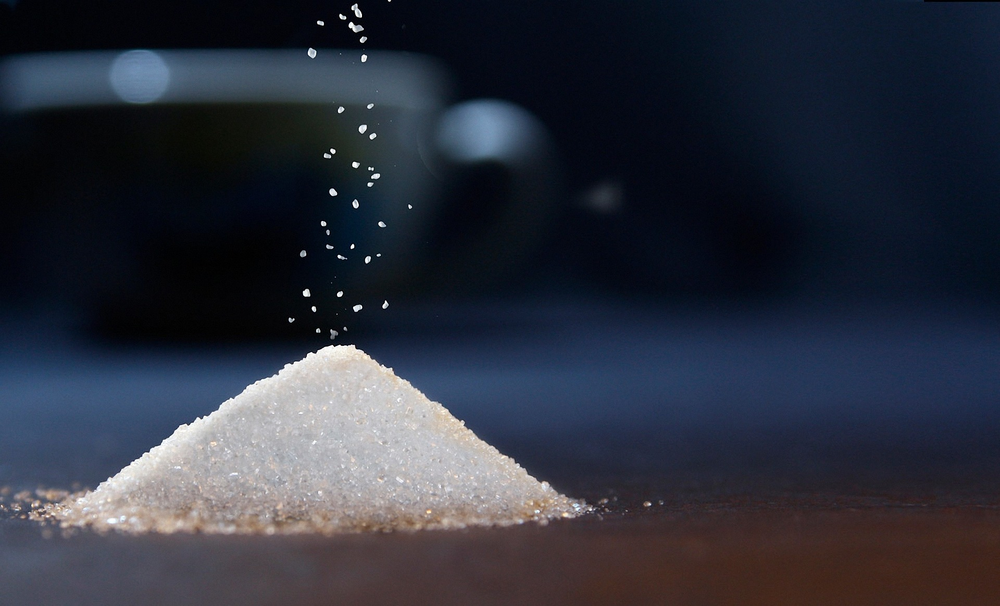

O que é açúcar?

O açúcar é um ingrediente natural que faz parte da nossa dieta há milhares de anos. Os açúcares são carboidratos que fornecem energia para o corpo. O açúcar mais comum no corpo é a glicose que seu cérebro, principais órgãos e músculos precisam para funcionar corretamente. Alguns açúcares são encontrados naturalmente nos alimentos (por exemplo, frutas, vegetais e leite), enquanto outros são usados durante o processamento e a cocção – saiba mais sobre como os açúcares são usados aqui . O corpo não distingue entre os diferentes tipos de açúcar e os decompõe exatamente da mesma maneira. Por exemplo, a sacarose de uma maçã é quebrada exatamente da mesma maneira que a sacarose em seu açucareiro.
